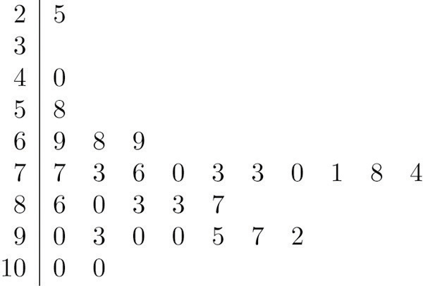
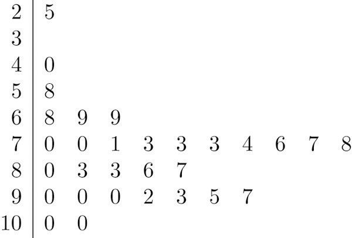
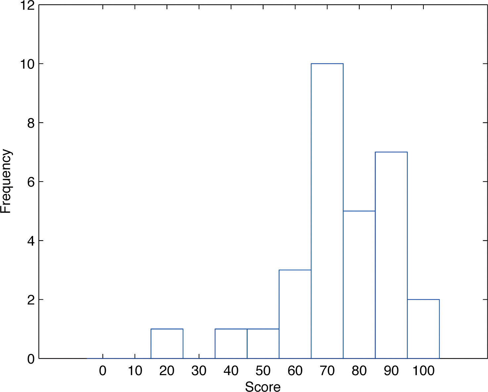
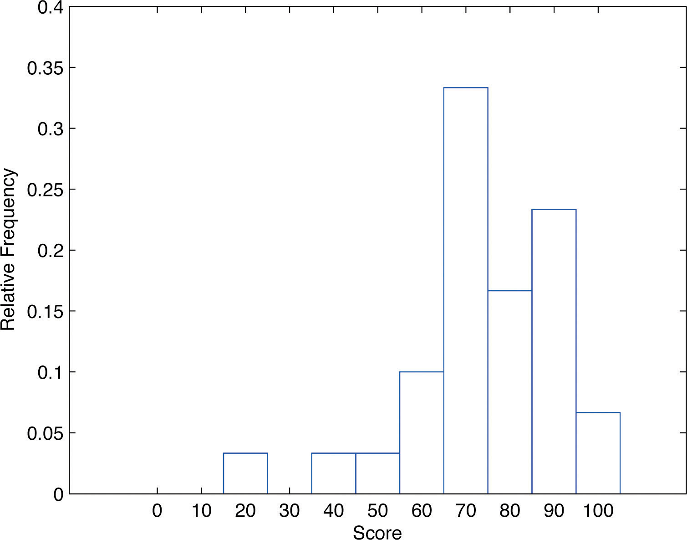
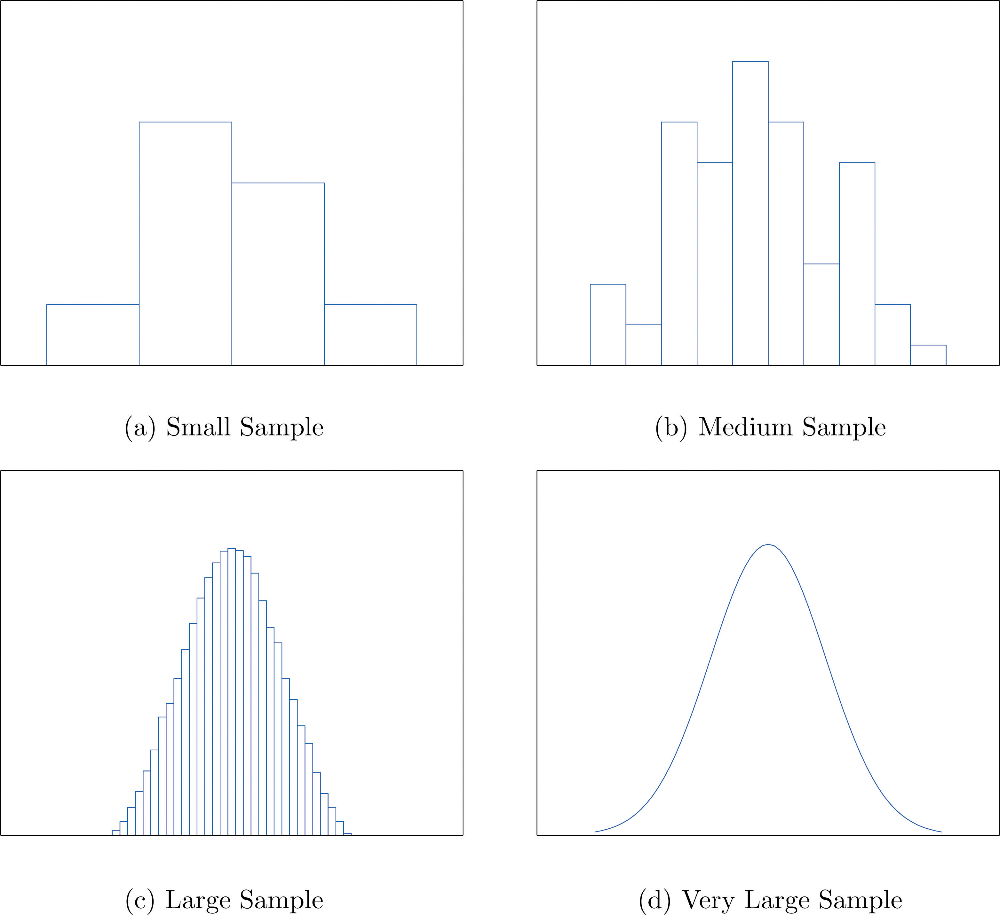
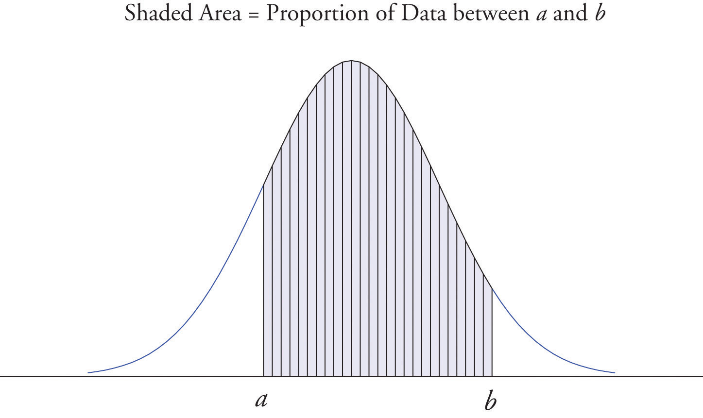

A well-known adage is that “a picture is worth a thousand words.” This saying proves true when it comes to presenting statistical information in a data set. There are many effective ways to present data graphically. The three graphical tools that are introduced in this section are among the most commonly used and are relevant to the subsequent presentation of the material in this book.
Suppose 30 students in a statistics class took a test and made the following scores:
How did the class do on the test? A quick glance at the set of 30 numbers does not immediately give a clear answer. However the data set may be reorganized and rewritten to make relevant information more visible. One way to do so is to construct a stem and leaf diagram as shown in Figure 2.1 "Stem and Leaf Diagram". The numbers in the tens place, from 2 through 9, and additionally the number 10, are the “stems,” and are arranged in numerical order from top to bottom to the left of a vertical line. The number in the units place in each measurement is a “leaf,” and is placed in a row to the right of the corresponding stem, the number in the tens place of that measurement. Thus the three leaves 9, 8, and 9 in the row headed with the stem 6 correspond to the three exam scores in the 60s, 69 (in the first row of data), 68 (in the third row), and 69 (also in the third row). The display is made even more useful for some purposes by rearranging the leaves in numerical order, as shown in Figure 2.2 "Ordered Stem and Leaf Diagram". Either way, with the data reorganized certain information of interest becomes apparent immediately. There are two perfect scores; three students made scores under 60; most students scored in the 70s, 80s and 90s; and the overall average is probably in the high 70s or low 80s.
Figure 2.1 Stem and Leaf Diagram
Figure 2.2 Ordered Stem and Leaf Diagram
In this example the scores have a natural stem (the tens place) and leaf (the ones place). One could spread the diagram out by splitting each tens place number into lower and upper categories. For example, all the scores in the 80s may be represented on two separate stems, lower 80s and upper 80s:
The definitions of stems and leaves are flexible in practice. The general purpose of a stem and leaf diagram is to provide a quick display of how the data are distributed across the range of their values; some improvisation could be necessary to obtain a diagram that best meets that goal.
Note that all of the original data can be recovered from the stem and leaf diagram. This will not be true in the next two types of graphical displays.
The stem and leaf diagram is not practical for large data sets, so we need a different, purely graphical way to represent data. A frequency histogramA graphical device showing how data are distributed across the range of their values by collecting them into classes and indicating the number of measurements in each class. is such a device. We will illustrate it using the same data set from the previous subsection. For the 30 scores on the exam, it is natural to group the scores on the standard ten-point scale, and count the number of scores in each group. Thus there are two 100s, seven scores in the 90s, six in the 80s, and so on. We then construct the diagram shown in Figure 2.3 "Frequency Histogram" by drawing for each group, or class, a vertical bar whose length is the number of observations in that group. In our example, the bar labeled 100 is 2 units long, the bar labeled 90 is 7 units long, and so on. While the individual data values are lost, we know the number in each class. This number is called the frequencyOf a class of measurements, the number of measurements in the data set that are in the class. of the class, hence the name frequency histogram.
Figure 2.3 Frequency Histogram
The same procedure can be applied to any collection of numerical data. Observations are grouped into several classes and the frequency (the number of observations) of each class is noted. These classes are arranged and indicated in order on the horizontal axis (called the x-axis), and for each group a vertical bar, whose length is the number of observations in that group, is drawn. The resulting display is a frequency histogram for the data. The similarity in Figure 2.1 "Stem and Leaf Diagram" and Figure 2.3 "Frequency Histogram" is apparent, particularly if you imagine turning the stem and leaf diagram on its side by rotating it a quarter turn counterclockwise.
In general, the definition of the classes in the frequency histogram is flexible. The general purpose of a frequency histogram is very much the same as that of a stem and leaf diagram, to provide a graphical display that gives a sense of data distribution across the range of values that appear. We will not discuss the process of constructing a histogram from data since in actual practice it is done automatically with statistical software or even handheld calculators.
In our example of the exam scores in a statistics class, five students scored in the 80s. The number 5 is the frequency of the group labeled “80s.” Since there are 30 students in the entire statistics class, the proportion who scored in the 80s is 5/30. The number 5/30, which could also be expressed as , or as 16.67%, is the relative frequencyOf a class of measurements, the proportion of all measurements in the data set that are in the class. of the group labeled “80s.” Every group (the 70s, the 80s, and so on) has a relative frequency. We can thus construct a diagram by drawing for each group, or class, a vertical bar whose length is the relative frequency of that group. For example, the bar for the 80s will have length 5/30 unit, not 5 units. The diagram is a relative frequency histogramA graphical device showing how data are distributed across the range of their values by collecting them into classes and indicating the proportion of measurements in each class. for the data, and is shown in Figure 2.4 "Relative Frequency Histogram". It is exactly the same as the frequency histogram except that the vertical axis in the relative frequency histogram is not frequency but relative frequency.
Figure 2.4 Relative Frequency Histogram
The same procedure can be applied to any collection of numerical data. Classes are selected, the relative frequency of each class is noted, the classes are arranged and indicated in order on the horizontal axis, and for each class a vertical bar, whose length is the relative frequency of the class, is drawn. The resulting display is a relative frequency histogram for the data. A key point is that now if each vertical bar has width 1 unit, then the total area of all the bars is 1 or 100%.
Although the histograms in Figure 2.3 "Frequency Histogram" and Figure 2.4 "Relative Frequency Histogram" have the same appearance, the relative frequency histogram is more important for us, and it will be relative frequency histograms that will be used repeatedly to represent data in this text. To see why this is so, reflect on what it is that you are actually seeing in the diagrams that quickly and effectively communicates information to you about the data. It is the relative sizes of the bars. The bar labeled “70s” in either figure takes up 1/3 of the total area of all the bars, and although we may not think of this consciously, we perceive the proportion 1/3 in the figures, indicating that a third of the grades were in the 70s. The relative frequency histogram is important because the labeling on the vertical axis reflects what is important visually: the relative sizes of the bars.
When the size n of a sample is small only a few classes can be used in constructing a relative frequency histogram. Such a histogram might look something like the one in panel (a) of Figure 2.5 "Sample Size and Relative Frequency Histograms". If the sample size n were increased, then more classes could be used in constructing a relative frequency histogram and the vertical bars of the resulting histogram would be finer, as indicated in panel (b) of Figure 2.5 "Sample Size and Relative Frequency Histograms". For a very large sample the relative frequency histogram would look very fine, like the one in (c) of Figure 2.5 "Sample Size and Relative Frequency Histograms". If the sample size were to increase indefinitely then the corresponding relative frequency histogram would be so fine that it would look like a smooth curve, such as the one in panel (d) of Figure 2.5 "Sample Size and Relative Frequency Histograms".
Figure 2.5 Sample Size and Relative Frequency Histograms
It is common in statistics to represent a population or a very large data set by a smooth curve. It is good to keep in mind that such a curve is actually just a very fine relative frequency histogram in which the exceedingly narrow vertical bars have disappeared. Because the area of each such vertical bar is the proportion of the data that lies in the interval of numbers over which that bar stands, this means that for any two numbers a and b, the proportion of the data that lies between the two numbers a and b is the area under the curve that is above the interval (a,b) in the horizontal axis. This is the area shown in Figure 2.6 "A Very Fine Relative Frequency Histogram". In particular the total area under the curve is 1, or 100%.
Figure 2.6 A Very Fine Relative Frequency Histogram
Describe one difference between a frequency histogram and a relative frequency histogram.
Describe one advantage of a stem and leaf diagram over a frequency histogram.
Construct a stem and leaf diagram, a frequency histogram, and a relative frequency histogram for the following data set. For the histograms use classes 51–60, 61–70, and so on.
Construct a stem and leaf diagram, a frequency histogram, and a relative frequency histogram for the following data set. For the histograms use classes 6.0–6.9, 7.0–7.9, and so on.
A data set contains n = 10 observations. The values x and their frequencies f are summarized in the following data frequency table.
Construct a frequency histogram and a relative frequency histogram for the data set.
A data set contains the n = 20 observations The values x and their frequencies f are summarized in the following data frequency table.
The frequency of the value 0 is missing. Find a and then sketch a frequency histogram and a relative frequency histogram for the data set.
A data set has the following frequency distribution table:
The number a is unknown. Can you construct a frequency histogram? If so, construct it. If not, say why not.
A table of some of the relative frequencies computed from a data set is
The number p is yet to be computed. Finish the table and construct the relative frequency histogram for the data set.
The IQ scores of ten students randomly selected from an elementary school are given.
Grouping the measures in the 80s, the 90s, and so on, construct a stem and leaf diagram, a frequency histogram, and a relative frequency histogram.
The IQ scores of ten students randomly selected from an elementary school for academically gifted students are given.
Grouping the measures by their common hundreds and tens digits, construct a stem and leaf diagram, a frequency histogram, and a relative frequency histogram.
During a one-day blood drive 300 people donated blood at a mobile donation center. The blood types of these 300 donors are summarized in the table.
Construct a relative frequency histogram for the data set.
In a particular kitchen appliance store an electric automatic rice cooker is a popular item. The weekly sales for the last 20 weeks are shown.
Construct a relative frequency histogram with classes 6–10, 11–15, and 16–20.
Random samples, each of size n = 10, were taken of the lengths in centimeters of three kinds of commercial fish, with the following results:
Grouping the measures by their common hundreds and tens digits, construct a stem and leaf diagram, a frequency histogram, and a relative frequency histogram for each of the samples. Compare the histograms and describe any patterns they exhibit.
During a one-day blood drive 300 people donated blood at a mobile donation center. The blood types of these 300 donors are summarized below.
Identify the blood type that has the highest relative frequency for these 300 people. Can you conclude that the blood type you identified is also most common for all people in the population at large? Explain.
In a particular kitchen appliance store, the weekly sales of an electric automatic rice cooker for the last 20 weeks are as follows.
In retail sales, too large an inventory ties up capital, while too small an inventory costs lost sales and customer satisfaction. Using the relative frequency histogram for these data, find approximately how many rice cookers must be in stock at the beginning of each week if
The vertical scale on one is the frequencies and on the other is the relative frequencies.
Frequency and relative frequency histograms are similarly generated.
Noting that n = 10 the relative frequency table is:
Since n is unknown, a is unknown, so the histogram cannot be constructed.
Frequency and relative frequency histograms are similarly generated.
Noting n = 300, the relative frequency table is therefore:
A relative frequency histogram is then generated.
The stem and leaf diagrams listed for Samples 1, 2, and 3 in that order.
The frequency tables are given below in the same order.
The relative frequency tables are given below in the same order.